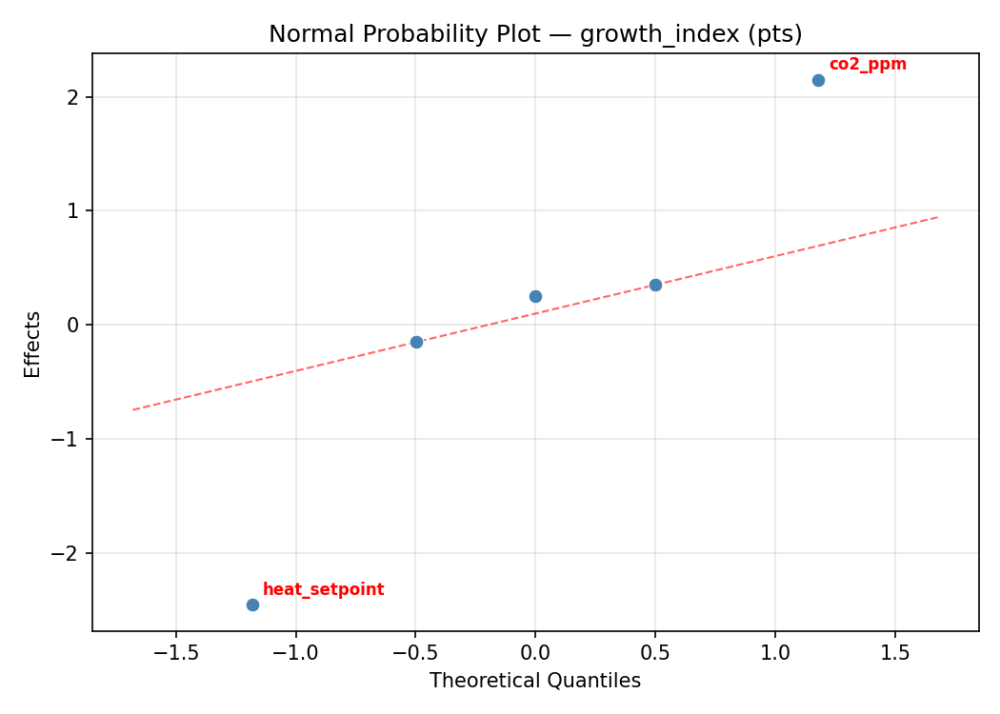
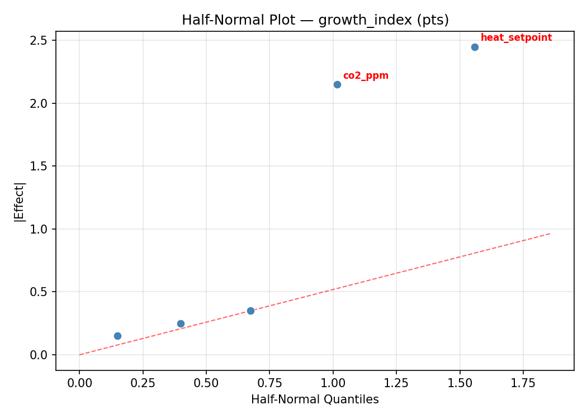
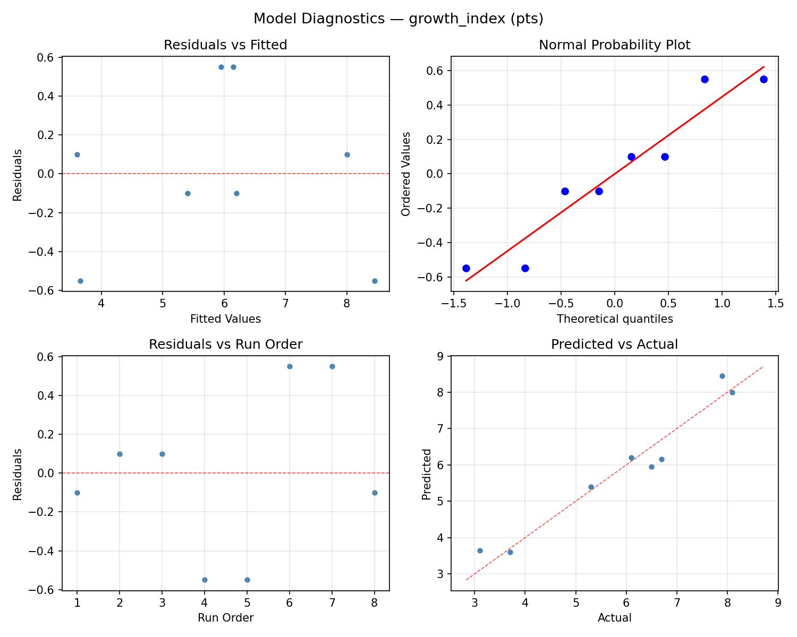
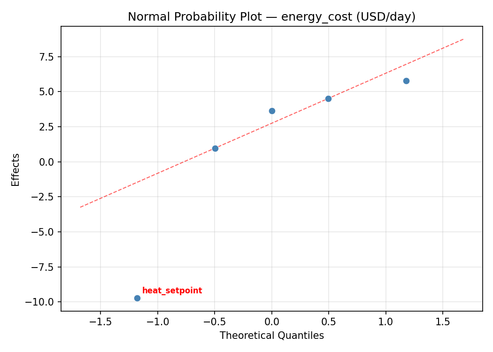
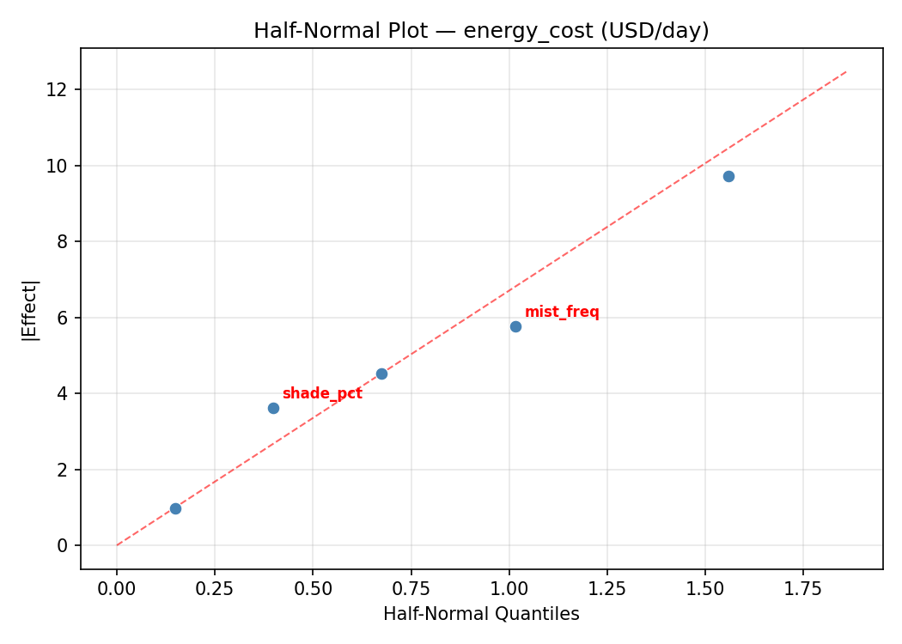
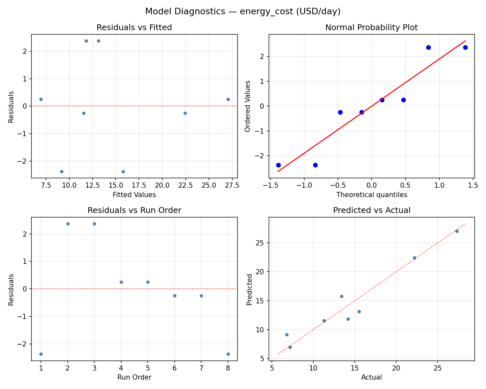

Summary
This experiment investigates greenhouse climate control. Plackett-Burman screening of ventilation rate, shade cloth, CO2 enrichment, heating setpoint, and misting frequency for plant growth and energy cost.
The design varies 5 factors: vent rate (ach), ranging from 5 to 30, shade pct (%), ranging from 0 to 60, co2 ppm (ppm), ranging from 400 to 1200, heat setpoint (C), ranging from 15 to 25, and mist freq (per_day), ranging from 0 to 12. The goal is to optimize 2 responses: growth index (pts) (maximize) and energy cost (USD/day) (minimize). Fixed conditions held constant across all runs include greenhouse area = 200m2, crop = cucumber.
A Plackett-Burman screening design was used to efficiently test 5 factors in only 8 runs. This design assumes interactions are negligible and focuses on identifying the most influential main effects.
Key Findings
For growth index, the most influential factors were heat setpoint (45.9%), co2 ppm (18.9%), mist freq (17.1%). The best observed value was 8.1 (at vent rate = 5, shade pct = 0, co2 ppm = 1200).
For energy cost, the most influential factors were mist freq (30.3%), co2 ppm (24.6%), heat setpoint (19.5%). The best observed value was 6.8 (at vent rate = 5, shade pct = 0, co2 ppm = 1200).
Recommended Next Steps
- Follow up with a response surface design (CCD or Box-Behnken) on the top 3–4 factors to model curvature and find the true optimum.
- Consider whether any fixed factors should be varied in a future study.
- The screening results can guide factor reduction — drop factors contributing less than 5% and re-run with a smaller, more focused design.
Experimental Setup
Factors
| Factor | Low | High | Unit |
|---|
vent_rate | 5 | 30 | ach |
shade_pct | 0 | 60 | % |
co2_ppm | 400 | 1200 | ppm |
heat_setpoint | 15 | 25 | C |
mist_freq | 0 | 12 | per_day |
Fixed: greenhouse_area = 200m2, crop = cucumber
Responses
| Response | Direction | Unit |
|---|
growth_index | ↑ maximize | pts |
energy_cost | ↓ minimize | USD/day |
Configuration
{
"metadata": {
"name": "Greenhouse Climate Control",
"description": "Plackett-Burman screening of ventilation rate, shade cloth, CO2 enrichment, heating setpoint, and misting frequency for plant growth and energy cost"
},
"factors": [
{
"name": "vent_rate",
"levels": [
"5",
"30"
],
"type": "continuous",
"unit": "ach"
},
{
"name": "shade_pct",
"levels": [
"0",
"60"
],
"type": "continuous",
"unit": "%"
},
{
"name": "co2_ppm",
"levels": [
"400",
"1200"
],
"type": "continuous",
"unit": "ppm"
},
{
"name": "heat_setpoint",
"levels": [
"15",
"25"
],
"type": "continuous",
"unit": "C"
},
{
"name": "mist_freq",
"levels": [
"0",
"12"
],
"type": "continuous",
"unit": "per_day"
}
],
"fixed_factors": {
"greenhouse_area": "200m2",
"crop": "cucumber"
},
"responses": [
{
"name": "growth_index",
"optimize": "maximize",
"unit": "pts"
},
{
"name": "energy_cost",
"optimize": "minimize",
"unit": "USD/day"
}
],
"settings": {
"operation": "plackett_burman",
"test_script": "use_cases/105_greenhouse_climate/sim.sh"
}
}
Experimental Matrix
The Plackett-Burman Design produces 8 runs. Each row is one experiment with specific factor settings.
| Run | vent_rate | shade_pct | co2_ppm | heat_setpoint | mist_freq |
|---|
| 1 | 30 | 60 | 1200 | 15 | 0 |
| 2 | 5 | 0 | 1200 | 25 | 0 |
| 3 | 5 | 60 | 400 | 25 | 0 |
| 4 | 30 | 60 | 1200 | 25 | 12 |
| 5 | 5 | 60 | 400 | 15 | 12 |
| 6 | 30 | 0 | 400 | 25 | 12 |
| 7 | 5 | 0 | 1200 | 15 | 12 |
| 8 | 30 | 0 | 400 | 15 | 0 |
Step-by-Step Workflow
1
Preview the design
$ python doe.py info --config use_cases/105_greenhouse_climate/config.json
2
Generate the runner script
$ python doe.py generate --config use_cases/105_greenhouse_climate/config.json \
--output use_cases/105_greenhouse_climate/results/run.sh --seed 42
3
Execute the experiments
$ bash use_cases/105_greenhouse_climate/results/run.sh
4
Analyze results
$ python doe.py analyze --config use_cases/105_greenhouse_climate/config.json
5
Get optimization recommendations
$ python doe.py optimize --config use_cases/105_greenhouse_climate/config.json
6
Multi-objective optimization
With 2 competing responses, use --multi to find the best compromise via Derringer–Suich desirability.
$ python doe.py optimize --config use_cases/105_greenhouse_climate/config.json --multi
7
Generate the HTML report
$ python doe.py report --config use_cases/105_greenhouse_climate/config.json \
--output use_cases/105_greenhouse_climate/results/report.html
Features Exercised
| Feature | Value |
|---|
| Design type | plackett_burman |
| Factor types | continuous (all 5) |
| Arg style | double-dash |
| Responses | 2 (growth_index ↑, energy_cost ↓) |
| Total runs | 8 |
Analysis Results
Generated from actual experiment runs using the DOE Helper Tool.
Response: growth_index
Top factors: heat_setpoint (45.9%), co2_ppm (18.9%), mist_freq (17.1%).
ANOVA
| Source | DF | SS | MS | F | p-value |
|---|
| Source | DF | SS | MS | F | p-value |
| vent_rate | 1 | 0.8450 | 0.8450 | 0.667 | 0.4513 |
| shade_pct | 1 | 0.2450 | 0.2450 | 0.193 | 0.6785 |
| co2_ppm | 1 | 2.2050 | 2.2050 | 1.740 | 0.2444 |
| heat_setpoint | 1 | 13.0050 | 13.0050 | 10.260 | 0.0239 |
| mist_freq | 1 | 1.8050 | 1.8050 | 1.424 | 0.2863 |
| vent_rate*shade_pct | 1 | 2.2050 | 2.2050 | 1.740 | 0.2444 |
| vent_rate*co2_ppm | 1 | 0.2450 | 0.2450 | 0.193 | 0.6785 |
| vent_rate*heat_setpoint | 1 | 1.8050 | 1.8050 | 1.424 | 0.2863 |
| vent_rate*mist_freq | 1 | 13.0050 | 13.0050 | 10.260 | 0.0239 |
| shade_pct*co2_ppm | 1 | 0.8450 | 0.8450 | 0.667 | 0.4513 |
| shade_pct*heat_setpoint | 1 | 0.6050 | 0.6050 | 0.477 | 0.5204 |
| shade_pct*mist_freq | 1 | 4.2050 | 4.2050 | 3.318 | 0.1282 |
| co2_ppm*heat_setpoint | 1 | 4.2050 | 4.2050 | 3.318 | 0.1282 |
| co2_ppm*mist_freq | 1 | 0.6050 | 0.6050 | 0.477 | 0.5204 |
| heat_setpoint*mist_freq | 1 | 0.8450 | 0.8450 | 0.667 | 0.4513 |
| Error | (Lenth | PSE) | 5 | 6.3375 | 1.2675 |
| Total | 7 | 22.9150 | 3.2736 | | |
Pareto Chart

Main Effects Plot

Normal Probability Plot of Effects

Half-Normal Plot of Effects

Model Diagnostics

Response: energy_cost
Top factors: mist_freq (30.3%), co2_ppm (24.6%), heat_setpoint (19.5%).
ANOVA
| Source | DF | SS | MS | F | p-value |
|---|
| Source | DF | SS | MS | F | p-value |
| vent_rate | 1 | 11.7612 | 11.7612 | 0.215 | 0.6627 |
| shade_pct | 1 | 20.1612 | 20.1612 | 0.368 | 0.5707 |
| co2_ppm | 1 | 57.7812 | 57.7812 | 1.054 | 0.3517 |
| heat_setpoint | 1 | 36.5513 | 36.5513 | 0.667 | 0.4513 |
| mist_freq | 1 | 87.7812 | 87.7812 | 1.601 | 0.2615 |
| vent_rate*shade_pct | 1 | 57.7813 | 57.7813 | 1.054 | 0.3517 |
| vent_rate*co2_ppm | 1 | 20.1613 | 20.1613 | 0.368 | 0.5707 |
| vent_rate*heat_setpoint | 1 | 87.7812 | 87.7812 | 1.601 | 0.2615 |
| vent_rate*mist_freq | 1 | 36.5512 | 36.5512 | 0.667 | 0.4513 |
| shade_pct*co2_ppm | 1 | 11.7613 | 11.7613 | 0.215 | 0.6627 |
| shade_pct*heat_setpoint | 1 | 128.8013 | 128.8013 | 2.349 | 0.1859 |
| shade_pct*mist_freq | 1 | 4.9613 | 4.9613 | 0.090 | 0.7757 |
| co2_ppm*heat_setpoint | 1 | 4.9613 | 4.9613 | 0.090 | 0.7757 |
| co2_ppm*mist_freq | 1 | 128.8012 | 128.8012 | 2.349 | 0.1859 |
| heat_setpoint*mist_freq | 1 | 11.7612 | 11.7612 | 0.215 | 0.6627 |
| Error | (Lenth | PSE) | 5 | 274.1344 | 54.8269 |
| Total | 7 | 347.7988 | 49.6855 | | |
Pareto Chart

Main Effects Plot

Normal Probability Plot of Effects

Half-Normal Plot of Effects

Model Diagnostics

Response Surface Plots
3D surfaces fitted with quadratic RSM. Red dots are observed data points.
energy cost co2 ppm vs heat setpoint

energy cost co2 ppm vs mist freq

energy cost heat setpoint vs mist freq

energy cost shade pct vs co2 ppm

energy cost shade pct vs heat setpoint

energy cost shade pct vs mist freq

energy cost vent rate vs co2 ppm

energy cost vent rate vs heat setpoint

energy cost vent rate vs mist freq

energy cost vent rate vs shade pct

growth index co2 ppm vs heat setpoint

growth index co2 ppm vs mist freq

growth index heat setpoint vs mist freq

growth index shade pct vs co2 ppm

growth index shade pct vs heat setpoint

growth index shade pct vs mist freq

growth index vent rate vs co2 ppm

growth index vent rate vs heat setpoint

growth index vent rate vs mist freq

growth index vent rate vs shade pct

Multi-Objective Optimization
When responses compete, Derringer–Suich desirability finds the best compromise.
Each response is scaled to a 0–1 desirability, then combined via a weighted geometric mean.
Overall Desirability
D = 0.7913
Per-Response Desirability
| Response | Weight | Desirability | Predicted | Dir |
|---|
growth_index |
1.5 |
|
7.93 0.9229 7.93 pts |
↑ |
energy_cost |
1.0 |
|
14.16 0.6281 14.16 USD/day |
↓ |
Recommended Settings
| Factor | Value |
|---|
vent_rate | 6.245 ach |
shade_pct | 50.81 % |
co2_ppm | 1175 ppm |
heat_setpoint | 16.43 C |
mist_freq | 2.143 per_day |
Source: from RSM model prediction
Trade-off Summary
Sacrifice = how much worse than single-objective best.
| Response | Predicted | Best Observed | Sacrifice |
|---|
energy_cost | 14.16 | 6.80 | +7.36 |
Top 3 Runs by Desirability
| Run | D | Factor Settings |
|---|
| #7 | 0.7215 | vent_rate=5, shade_pct=0, co2_ppm=1200, heat_setpoint=15, mist_freq=12 |
| #1 | 0.6183 | vent_rate=5, shade_pct=60, co2_ppm=400, heat_setpoint=15, mist_freq=12 |
Model Quality
| Response | R² | Type |
|---|
energy_cost | 0.8563 | linear |
Full Multi-Objective Output
============================================================
MULTI-OBJECTIVE OPTIMIZATION
Method: Derringer-Suich Desirability Function
============================================================
Overall desirability: D = 0.7913
Response Weight Desirability Predicted Direction
---------------------------------------------------------------------
growth_index 1.5 0.9229 7.93 pts ↑
energy_cost 1.0 0.6281 14.16 USD/day ↓
Recommended settings:
vent_rate = 6.245 ach
shade_pct = 50.81 %
co2_ppm = 1175 ppm
heat_setpoint = 16.43 C
mist_freq = 2.143 per_day
(from RSM model prediction)
Trade-off summary:
growth_index: 7.93 (best observed: 8.10, sacrifice: +0.17)
energy_cost: 14.16 (best observed: 6.80, sacrifice: +7.36)
Model quality:
growth_index: R² = 0.9577 (linear)
energy_cost: R² = 0.8563 (linear)
Top 3 observed runs by overall desirability:
1. Run #2 (D=0.7760): vent_rate=30, shade_pct=60, co2_ppm=1200, heat_setpoint=15, mist_freq=0
2. Run #7 (D=0.7215): vent_rate=5, shade_pct=0, co2_ppm=1200, heat_setpoint=15, mist_freq=12
3. Run #1 (D=0.6183): vent_rate=5, shade_pct=60, co2_ppm=400, heat_setpoint=15, mist_freq=12
Full Analysis Output
=== Main Effects: growth_index ===
Factor Effect Std Error % Contribution
--------------------------------------------------------------
heat_setpoint 2.5500 0.6397 45.9%
co2_ppm 1.0500 0.6397 18.9%
mist_freq 0.9500 0.6397 17.1%
vent_rate -0.6500 0.6397 11.7%
shade_pct 0.3500 0.6397 6.3%
=== ANOVA Table: growth_index ===
Source DF SS MS F p-value
-----------------------------------------------------------------------------
vent_rate 1 0.8450 0.8450 0.667 0.4513
shade_pct 1 0.2450 0.2450 0.193 0.6785
co2_ppm 1 2.2050 2.2050 1.740 0.2444
heat_setpoint 1 13.0050 13.0050 10.260 0.0239
mist_freq 1 1.8050 1.8050 1.424 0.2863
vent_rate*shade_pct 1 2.2050 2.2050 1.740 0.2444
vent_rate*co2_ppm 1 0.2450 0.2450 0.193 0.6785
vent_rate*heat_setpoint 1 1.8050 1.8050 1.424 0.2863
vent_rate*mist_freq 1 13.0050 13.0050 10.260 0.0239
shade_pct*co2_ppm 1 0.8450 0.8450 0.667 0.4513
shade_pct*heat_setpoint 1 0.6050 0.6050 0.477 0.5204
shade_pct*mist_freq 1 4.2050 4.2050 3.318 0.1282
co2_ppm*heat_setpoint 1 4.2050 4.2050 3.318 0.1282
co2_ppm*mist_freq 1 0.6050 0.6050 0.477 0.5204
heat_setpoint*mist_freq 1 0.8450 0.8450 0.667 0.4513
Error (Lenth PSE) 5 6.3375 1.2675
Total 7 22.9150 3.2736
Note: Error estimated using Lenth's pseudo-standard-error (unreplicated design)
=== Interaction Effects: growth_index ===
Factor A Factor B Interaction % Contribution
------------------------------------------------------------------------
vent_rate mist_freq -2.5500 25.0%
shade_pct mist_freq 1.4500 14.2%
co2_ppm heat_setpoint -1.4500 14.2%
vent_rate shade_pct 1.0500 10.3%
vent_rate heat_setpoint -0.9500 9.3%
shade_pct co2_ppm -0.6500 6.4%
heat_setpoint mist_freq 0.6500 6.4%
shade_pct heat_setpoint -0.5500 5.4%
co2_ppm mist_freq 0.5500 5.4%
vent_rate co2_ppm 0.3500 3.4%
=== Summary Statistics: growth_index ===
vent_rate:
Level N Mean Std Min Max
------------------------------------------------------------
30 4 6.2500 2.1252 3.7000 8.1000
5 4 5.6000 1.6852 3.1000 6.7000
shade_pct:
Level N Mean Std Min Max
------------------------------------------------------------
0 4 5.7500 2.0616 3.1000 7.9000
60 4 6.1000 1.8184 3.7000 8.1000
co2_ppm:
Level N Mean Std Min Max
------------------------------------------------------------
1200 4 5.4000 2.3917 3.1000 8.1000
400 4 6.4500 1.0878 5.3000 7.9000
heat_setpoint:
Level N Mean Std Min Max
------------------------------------------------------------
15 4 4.6500 1.5438 3.1000 6.5000
25 4 7.2000 0.9592 6.1000 8.1000
mist_freq:
Level N Mean Std Min Max
------------------------------------------------------------
0 4 5.4500 1.3000 3.7000 6.7000
12 4 6.4000 2.3123 3.1000 8.1000
=== Main Effects: energy_cost ===
Factor Effect Std Error % Contribution
--------------------------------------------------------------
mist_freq 6.6250 2.4921 30.3%
co2_ppm 5.3750 2.4921 24.6%
heat_setpoint 4.2750 2.4921 19.5%
shade_pct 3.1750 2.4921 14.5%
vent_rate -2.4250 2.4921 11.1%
=== ANOVA Table: energy_cost ===
Source DF SS MS F p-value
-----------------------------------------------------------------------------
vent_rate 1 11.7612 11.7612 0.215 0.6627
shade_pct 1 20.1612 20.1612 0.368 0.5707
co2_ppm 1 57.7812 57.7812 1.054 0.3517
heat_setpoint 1 36.5513 36.5513 0.667 0.4513
mist_freq 1 87.7812 87.7812 1.601 0.2615
vent_rate*shade_pct 1 57.7813 57.7813 1.054 0.3517
vent_rate*co2_ppm 1 20.1613 20.1613 0.368 0.5707
vent_rate*heat_setpoint 1 87.7812 87.7812 1.601 0.2615
vent_rate*mist_freq 1 36.5512 36.5512 0.667 0.4513
shade_pct*co2_ppm 1 11.7613 11.7613 0.215 0.6627
shade_pct*heat_setpoint 1 128.8013 128.8013 2.349 0.1859
shade_pct*mist_freq 1 4.9613 4.9613 0.090 0.7757
co2_ppm*heat_setpoint 1 4.9613 4.9613 0.090 0.7757
co2_ppm*mist_freq 1 128.8012 128.8012 2.349 0.1859
heat_setpoint*mist_freq 1 11.7612 11.7612 0.215 0.6627
Error (Lenth PSE) 5 274.1344 54.8269
Total 7 347.7988 49.6855
Note: Error estimated using Lenth's pseudo-standard-error (unreplicated design)
=== Interaction Effects: energy_cost ===
Factor A Factor B Interaction % Contribution
------------------------------------------------------------------------
shade_pct heat_setpoint -8.0250 18.4%
co2_ppm mist_freq 8.0250 18.4%
vent_rate heat_setpoint -6.6250 15.2%
vent_rate shade_pct 5.3750 12.4%
vent_rate mist_freq -4.2750 9.8%
vent_rate co2_ppm 3.1750 7.3%
shade_pct co2_ppm -2.4250 5.6%
heat_setpoint mist_freq 2.4250 5.6%
shade_pct mist_freq -1.5750 3.6%
co2_ppm heat_setpoint 1.5750 3.6%
=== Summary Statistics: energy_cost ===
vent_rate:
Level N Mean Std Min Max
------------------------------------------------------------
30 4 15.9500 8.4815 6.8000 27.3000
5 4 13.5250 6.3305 7.2000 22.2000
shade_pct:
Level N Mean Std Min Max
------------------------------------------------------------
0 4 13.1500 9.6500 6.8000 27.3000
60 4 16.3250 4.0111 13.4000 22.2000
co2_ppm:
Level N Mean Std Min Max
------------------------------------------------------------
1200 4 12.0500 3.6792 7.2000 15.5000
400 4 17.4250 9.1179 6.8000 27.3000
heat_setpoint:
Level N Mean Std Min Max
------------------------------------------------------------
15 4 12.6000 7.2461 6.8000 22.2000
25 4 16.8750 7.1584 11.3000 27.3000
mist_freq:
Level N Mean Std Min Max
------------------------------------------------------------
0 4 11.4250 3.3170 6.8000 14.2000
12 4 18.0500 8.6989 7.2000 27.3000
Optimization Recommendations
=== Optimization: growth_index ===
Direction: maximize
Best observed run: #2
vent_rate = 5
shade_pct = 0
co2_ppm = 1200
heat_setpoint = 25
mist_freq = 0
Value: 8.1
RSM Model (linear, R² = 0.3380, Adj R² = -1.3170):
Coefficients:
intercept +5.9250
vent_rate -0.0250
shade_pct -0.1750
co2_ppm +0.5750
heat_setpoint -0.5750
mist_freq -0.5250
Predicted optimum (from linear model, at observed points):
vent_rate = 30
shade_pct = 60
co2_ppm = 1200
heat_setpoint = 15
mist_freq = 0
Predicted value: 7.4000
Surface optimum (via L-BFGS-B, linear model):
vent_rate = 5
shade_pct = 0
co2_ppm = 1200
heat_setpoint = 15
mist_freq = 0
Predicted value: 7.8000
Model quality: Weak fit — consider adding center points or using a different design.
Factor importance:
1. heat_setpoint (effect: -1.2, contribution: 30.7%)
2. co2_ppm (effect: -1.1, contribution: 30.7%)
3. mist_freq (effect: -1.0, contribution: 28.0%)
4. shade_pct (effect: -0.3, contribution: 9.3%)
5. vent_rate (effect: 0.0, contribution: 1.3%)
=== Optimization: energy_cost ===
Direction: minimize
Best observed run: #8
vent_rate = 5
shade_pct = 0
co2_ppm = 1200
heat_setpoint = 15
mist_freq = 12
Value: 6.8
RSM Model (linear, R² = 0.3755, Adj R² = -1.1859):
Coefficients:
intercept +14.7375
vent_rate +2.7875
shade_pct +0.5375
co2_ppm -0.2625
heat_setpoint +0.0375
mist_freq -2.8625
Predicted optimum (from linear model, at observed points):
vent_rate = 30
shade_pct = 60
co2_ppm = 1200
heat_setpoint = 15
mist_freq = 0
Predicted value: 20.6250
Surface optimum (via L-BFGS-B, linear model):
vent_rate = 5
shade_pct = 0
co2_ppm = 1200
heat_setpoint = 15
mist_freq = 12
Predicted value: 8.2500
Model quality: Weak fit — consider adding center points or using a different design.
Factor importance:
1. mist_freq (effect: -5.7, contribution: 44.1%)
2. vent_rate (effect: -5.6, contribution: 43.0%)
3. shade_pct (effect: 1.1, contribution: 8.3%)
4. co2_ppm (effect: 0.5, contribution: 4.0%)
5. heat_setpoint (effect: 0.1, contribution: 0.6%)